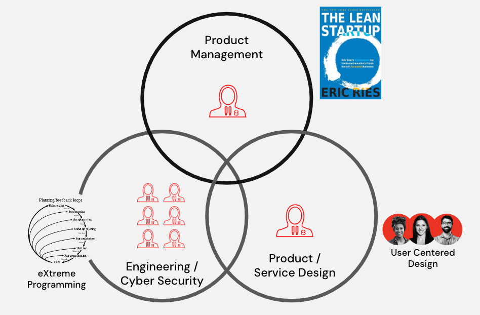

Continuous Delivery Risk Management Framework (CD-RMF) Playbook©
AKA THE C-ATO1 PLAYBOOK
Continuous Delivery Risk Management Framework (CD-RMF) Playbook © 2023 by Rise8, Inc. is licensed under CC BY-ND 4.0. This license requires that reusers give credit to the creator. It allows reusers to copy and distribute the material in any medium or format in unadapted form only, even for commercial purposes.
README: Please first read our Manifesto for a Continuous Delivery Risk Management Framework (CD-RMF)©. To advance that cause, we are making our internal playbook available to the entire govtech community.
This is v1, and we would love your feedback. We had to significantly modify our internal playbook to make it applicable to a wider audience, but we struggled to balance how deep to go on basics as well as how much of NIST documentation to rehash. Feedback there would be especially helpful.
In return for sharing this, we ask you to use it for good and contribute back to our playbook repo. Use it to communicate the benefits beyond just being able to ship software faster, but as a means to improve security and privacy outcomes while enabling continuous delivery. Get leaders to invest in continuous improvement of RMF.
When you do, share your new implementations, plays, automations, and lessons learned! While the terms of CC BY-ND 4.0 allow reusers to copy and distribute the material in unadapted form only, we will be creating a formal open source community around the playbook, and will provide ways for you to contribute to the material, be listed as a contributor, and make the community better. More to follow on that!
Together, we rise!
-
We are proposing the term “cATO” no longer be used, see our Manifesto for a CD-RMF. ↩
Introduction ↵
Why? The Need for cATO
The DevOps Research and Assessment (DORA) organization has nearly a decade of research showing that there is no tradeoff between speed and stability nor speed and security in high performing software organizations. In fact, both stability and security are positively correlated with speed. In other words, organizations with high software delivery performance experience a virtuous cycle between speed and security.
The True Cost of Delay
At the same time, both our citizens and our soldiers are paying the price of an immense cost of delay imposed by the way we currently approach the National Institute of Standards and Technology (NIST) Risk Management Framework (RMF) and obtaining Authorization to Operate (ATO). Unlike the commercial sector, in government the cost of delay is often measured in lives. Our security and privacy risk management processes are creating downstream risk to operations. The delay of capability to the battlefield, the operating table, and even in the distribution of government benefits is literally killing people.
Continuous Delivery as a Risk Mitigation
But aren’t we doing Agile, now? It has become popular to adopt Agile Software Development rhetoric in the Federal Government, however it is rarely executed. This is evidenced by the fact that the first principle from the Manifesto for Agile Software Development states, “Our highest priority is to satisfy customers through early and continuous delivery of valuable software.” That is to say that if delivery is not early and continuous, then ‘agile’ clearly has not manifested. When we say continuous delivery, we mean it.
In their book Continuous Delivery, Dave Farley and Jez Humble define continuous delivery as, “The ability to get changes, features, configuration changes, bug fixes, experiments into production safely and quickly in a sustainable way.” In this way, continuous delivery becomes an exercise in risk reduction not only to security and privacy risk, but especially to operational risk. To realize this benefit, production cannot be an arbitrary designation; production is the setting where software is put into operation for its intended uses by end users. Getting to such a production environment in Federal requires an ATO within the RMF. Continuously delivering to production would require a continuous ATO, which would require continuous application of the RMF. Thankfully, this can be accomplished within existing laws and NIST guidelines.
The Benefits of cATO
Improve security posture and lower risk
- Reduce the number of security defects through threat analysis and secure coding practices
- Continuously detect and remediate application vulnerabilities quickly via the Secure Release Pipeline
- Cybersecurity and vulnerability education is available to application development teams simply by utilizing the secure release pipeline
Increase transparency and trust
- Default access to all body of evidence artifacts throughout the software development life cycle (i.e. source code, documents, diagrams) for security control assessors and cybersecurity personnel to support continuous monitoring (e.g. assessment and evaluation)
- Incrementally automating risk assessment via secure release pipelines
Reduce costs & increase delivery of value to organizations and end-users
- Reducing the number of security defects and risks
- Leveraging a cloud environment
- Shipping software can be accomplished in hours or days, instead of weeks, months or even years
What's Really at Stake
In the digital era, both the warfighting domain and policy domain are digital. Both demand the early and continuous delivery of valuable software:
- We cannot afford to be disrupted on the battlefield–our democracy will be toppled from the outside.
- We cannot afford to fail to deliver on promises to our citizens–our democracy will be toppled from within.
The early and continuous delivery of software requires continuous ATO. Why do we need that? Because our democracy hangs in the balance.
History: The Evolution of Continuous Authority to Operate
It is important to understand that this has already been done.
On April 18, 2018, in an Air Force memorandum titled “Implementation of Ongoing Authorization for Agile Software Development”, Authorizing Official Lauren Knausenberger, then Air Force Director of Cyberspace Innovation, approved the first so-called “Continuous Authority to Operate” (coined by Bryon Kroger) implemented by Kessel Run.
Kessel Run had stood on the shoulders of giants, such as 18F’s accelerated ATOs on cloud.gov and NGA’s ‘ATO-in-a-day’ for their GEOINT Services Platform, but they were the first to implement the Risk Management Framework in a way that fully aligned with the Agile and DevOps SDLC without tradeoffs between speed and compliance/risk, and included the full-stack implementation and assessment of the associated controls. Kessel Run, at the time, could produce a full, up-to-date authorization package for every release in real time.
The first applications to achieve this were Raven and Marauder, both deployed to an on-premise cloud stack running Pivotal Cloud Foundry (like our friends at NGA) on the SIPR network. The Kessel Run team, led by Bryon Kroger and Andrew Altizer (ISSM), implemented this combination of people, process, and technology for an ongoing authorization that was tailor made for DevOps with deployment frequencies measured in hours. Bryon coined the term “cATO” to describe that specific implementation of an ongoing authorization within RMF to enable true continuous delivery. Some of the technology and process underpinnings were adapted from NGA and 18F, while some were changed or added.
Unfortunately, the term cATO would take on a life of its own and headed in a different direction, away from an RMF-based controls implementation, assessment, and authorization to something based on political favor and a particular reference design that required the use of certain technologies, at odds with the RMF’s technology neutral stance. Senior leaders also began to espouse “certifying the people and the process”, instead of systems themselves and, unfortunately, placed their trust in the wrong people who weren’t even practicing the RMF-deficient method they were preaching.
During that time, Bryon Kroger left the Air Force and founded Rise8, where we have continued advancing RMF for continuous delivery, improving both process and automation. It has been difficult, however, to get the community to adopt this rigorous approach given that many organizations were able to get all the benefits of being able to continuously deploy their software without doing the work. It’s a close cousin of Shadow IT: Shadow ATO.
Thankfully things started to change when the DOD CIO published a cATO memorandum that most insiders would describe as an attempt to clean up the mess of existing cATOs.
While this was great to see and a cleanup is much needed, we believe it misses the mark on how to apply NIST RMF to continuous delivery. The office has not consulted the actual practitioners who have implemented a truly RMF-based authorization for continuous delivery and, as of this writing, are writing additional guidance without doing so.
That is why Rise8 authored the manifesto and are making our playbook for CD-RMF public. Additionally we are forming a group of like-minded experts to lead an open source community that continues advancing CD-RMF.
FISMA
Copied from the NIST RMF website FISMA background
What is FISMA?
The Federal Information Security Management Act (FISMA) [FISMA 2002], part of the E-Government Act (Public Law 107-347) was passed in December 2002. FISMA 2002 requires each federal agency to develop, document, and implement an agency-wide program to provide information security for the information and systems that support the operations and assets of the agency, including those provided or managed by another agency, contractor, or other sources.
The Federal Information Security Modernization Act of 2014 amends FISMA 2002, by providing several modifications that modernize federal security practices to address evolving security concerns. These changes result in less overall reporting, strengthens the use of continuous monitoring in systems, increases focus on the agencies for compliance and reporting that is more focused on the issues caused by security incidents. FISMA 2014 also required the Office of Management and Budget (OMB) to amend/revise OMB Circular A-130 to eliminate inefficient and wasteful reporting and reflect changes in law and advances in technology.
FISMA, along with the Paperwork Reduction Act of 1995 and the Information Technology Management Reform Act of 1996 (Clinger-Cohen Act), explicitly emphasizes a risk-based policy for cost-effective security. In support of and reinforcing FISMA, the Office of Management and Budget (OMB) through Circular A-130, “Managing Federal Information as a Strategic Resource,” requires executive agencies within the federal government to:
- Plan for security
- Ensure that appropriate officials are assigned security responsibility
- Periodically review the security controls in their systems
- Authorize system processing prior to operations and, periodically, thereafter
What does FISMA require?
Federal agencies need to provide information security protections commensurate with the risk and magnitude of the harm resulting from unauthorized access, use, disclosure, disruption, modification, or destruction of:
- information collected/maintained by or on behalf of an agency
- Information systems used or operated by an agency or by a contractor of an agency or other organization on behalf of an agency.
Also, federal agencies need to “com[ply] with the information security standards” and guidelines, and mandatory required standards developed by NIST.
To whom does FISMA apply?
Federal agencies, contractors, or other sources that provide information security for the information and information systems that support the operations and assets of the agency.
What is a Federal Information System?
As defined in FISMA 2002, "[t]he term ‘Federal information system’ means an information system used or operated by an executive agency, by a contractor of an executive agency, or by another organization on behalf of an executive agency."
NIST Risk Management Framework
Copied from the NIST RMF website FISMA background
The NIST Risk Management Framework (RMF), outlined in NIST Special Publication 800-37, provides a flexible, holistic, and repeatable 7-step process to manage security and privacy risk and links to a suite of NIST standards and guidelines to support implementation of risk management programs to meet the requirements of the Federal Information Security Modernization Act (FISMA).
The risk-based approach of the NIST RMF helps an organization:
- Prepare for risk management through essential activities critical to design and implementation of a risk management program.
- Categorize systems and information based on an impact analysis.
- Select a set of the NIST SP 800-53 controls to protect the system based on risk assessments.
- Implement the controls, and document how the controls are deployed.
- Assess the control implementation to determine if the controls are in place, operating as intended, and producing the desired results to manage risk.
- Authorize the system to operate by a senior-level official that understands the controls in place to manage risk and any residual risk.
- Continuously monitor control implementation and changes to the risks to the system.
We recommend reading NIST SP 800-37, Revision 2 in its entirety before embarking on your ATO journey, paying particular attention to information about ongoing authorization, automation, and aligning the RMF with the SDLC. Appendix F is important to understand as you move towards Ongoing Authorization. These excerpts are just to help set a baseline for the playbook.
Myths
Myth 1: NIST RMF wasn’t designed with Agile and DevOps in mind.
According to NIST SP 800-37, Revision 2 the RMF is technology agnostic and can be adapted for any development approach.
Myth 2: The RMF doesn’t support the use of automation.
NIST SP 800-37, Revision 2 encourages organizations to “maximize the use of automation, wherever possible, to increase the speed, effectiveness, and efficiency of executing steps in the RMF.” It includes automating the preparation for authorization packages as well as facilitating real-time decision-making.
Myth 3: There is no flexibility in RMF implementation.
NIST SP 800-37, Revision 2 states that organizations have significant flexibility in how they carry out the steps of RMF as long as they are meeting all applicable security and privacy requirements. That flexibility also applies to control selection, so anyone who complains about control applicability needs to read about control tailoring.
Myth 4: The authorization boundary has to be drawn a certain way (e.g. around everything).
NIST SP 800-37, Revision 2 states the organization gets to establish the authorization boundary for systems and common controls. It later states that for software applications, “The software elements are included in authorization boundaries, either as part of the information system on which the software is hosted or as a part of an application-only system or subsystem that inherits controls from the hosting system. Software applications may depend on the resources provided by the hosting system and as such, can leverage the controls provided by the hosting system to help provide a foundational level of protection for the hosted applications.”
Myth 5: The RMF doesn’t align with modern SDLCs
NIST SP 800-37, Revision 2 states that the best RMF implementation (remember, implementation is flexible and determined by the organization) is indistinguishable from the organization’s SDLC.
Myth 6: There is no way to streamline RMF!
NIST SP 800-37, Revision 2 gives you a whole list of tips for streamlining implementation:

Now stop making excuses, and start making 🚀 happen!
Common Misconceptions
Here are some common misconceptions we’ve heard about cATO:
- It is a way to avoid having to do RMF - you have to do RMF better than most to achieve initial and then ongoing authorization
- It is authorizing the people and/or the process - FISMA is a law that requires us to authorize systems, which gives consideration but not primacy to people and process
- It is a way to push whatever you want, whenever you want - you have to meet all security and privacy requirements to deploy to production
- It is a pipeline - pipelines can enforce some controls and scans, but it does not get you anywhere near ongoing authorization by itself
- It requires a platform with sidecar containers - the RMF is technology neutral and you could do this with VMs if you do the work
- It is a waiver - it starts with a zero based authorization and requires incredible RMF implementation to achieve ongoing authorizationIt is something only certain people can do - any authorizing official can grant an ongoing authorization
- It is less difficult / documentation / work - it requires a zero based review and then ongoing implementation excellence to achieve.
There are also common misconceptions about FedRAMP and DISA Provisional Authorizations. Here is what you need to know:
- FedRAMP does not directly apply to DoD. DISA does, however, use FedRAMP authorization packages to formally grant a sort of Provisional Authorization reciprocity.
- Provisional Authorization is not an ATO. Agency Mission Owner Authorizing Officials must review the Provisional Authorization along with agency specific implementation assessments, then grant an ATO for the system to be used. The goal is to maximize the reuse of existing evidence.
- You do not have to wait for a FedRAMP or DISA Provisional Authorization before your agency can use a system. Agencies are allowed to perform an initial authorization to operate and send their evidence to the JAB or DISA AO for review to sponsor the system for FedRAMP or DISA PA, respectively. This will likely be the fastest route to ATO. Check local policy with your agency.
Ended: Introduction
Recommended Approach ↵
Overview
We firmly believe that local context is an important factor when making decisions to design and implement an approach to cATO. In fact it’s impossible to succeed with this journey if you don’t know where you’re starting from. Because of this, we chose to outline our recommended approaches and plays in a way that will help change agents navigate risks within their organizations.
People
Just like any other problem worth prioritizing and solving, establishing cATO and Ongoing Authorization demands that we identify, build and support the right team - a Dream Team! Start by identifying a passionate change agent within your own organization who fully understands how software delivery is achieved today, and how it currently impacts both the business as well as the product teams who are focused on delivering outcomes to warfighters, operators and civilians. There is a high likelihood that this change agent will assume the role and responsibilities of a Product Manager, focused on navigating risks surrounding the viability of each cATO implementation detail as an opportunity to impact the business.

From there, you’ll want to build a fully balanced team by incorporating additional roles and competencies that help manage desirability risks, by employing User Centered Design and Service Design principles that considers the local goals, wants and needs of your users – including assessors and authorizing officials. Finally, you’ll also include the right mixture of engineering and cyber security personnel to manage feasibility risks for solution(s) that consider your local constraints.
In order to foster a decentralized, and creative working environment for this team to quickly discover and prioritize the right problems to help establish your cATO, we recommend applying Jeff Bezos’s 'two pizza' team concept. We’re starting down a journey that, believe it or not, has a lot of unknown unknowns, and by keeping the team small and nimble, we stand a greater chance at being able to quickly learn and make decisions to persevere or pivot on our strategies for cATO. By including the right balance of competencies, and empowering the team to own the outcomes of their decisions by way of accountability, you then also stand a greater chance of establishing and continuously improving cATO for the organization. Only when this Dream Team demonstrates success will they propose options and recommendations on how to address maturing and scaling the RMF implementation and cATO.
What if we don't have the right skills?
When you encounter situations such as members of a Dream Team possessing strengths for the local context of your business, but lack technical or industry experience for Lean Product Management, User Centered Design and modern engineering practices, we recommend leveraging a pairing model. The benefits of this approach are the long term investment in growing workforce talent, and it ensures that the team is well equipped with the full range of competencies to help navigate the various risks we’ve previously discussed. Pairing models demand trust, as each pairing situation typically looks like one person leading their teammate through the journey navigating the business with their years of knowledge and experiences with the local context. While the other teammate is focused on applying and teaching the practices and skills that will forge new behaviors that drive curiosity-led outcomes, rather than solutions and outputs.
Critical RMF Supporting Roles
We also recommend fencing off program dollars to be sent to the departments that manage the Security Control Assessors & Privacy Officer roles, competencies and standard operating procedures. This is an opportunity to partner and hire assessors that have strong technical proficiency as additional dedicated members of your cATO efforts. This is one of the most important plays in the playbook! You may need to help them award an appropriate contract for this, write job descriptions, and more. But it is important that technical assessors report to whoever is responsible for assessing systems in your organization, so that they maintain their independence. On average over 80% of the time spent getting an ATO is spent waiting in queue, and one of the largest pain points reported is the back and forth between engineering and (non-technical) assessors. This play solves for both. This is also another opportunity where a pairing model can increase the technical proficiency of your assessors if need be.
What if cybersecurity is not a strength for teams?
Whether it's the actual teams implementing and supporting cATO, or the product teams who are delivering outcomes to warfighters, operators and civilians, we want to observe how security, privacy and operations become first class citizens throughout the system life cycle. There are actually multiple recommendations that should be considered here.
Start with a principle of learning by doing, by creating learning opportunities directly within, and throughout, your SDLC processes. Similar to the pairing model described earlier, and to support our rationale for having dedicated assessors, there is an opportunity for product teams to pair with assessors beyond just the assessment step of RMF. Think of it like embedding another subject matter expert into the product team, where the product team can now learn in near real-time about threats, weaknesses and general security concepts. This helps:
- Create a bi-directional learning environment for teams to learn about cybersecurity and complex privacy laws and regulations, and assessors to learn deeper context about the products they will be assessing.
- Build better quality into your products, earlier.
- Reduce the feedback loop process between control implementation, assessment and authorization.
- Improve the overall trust between product, security, and privacy teams.
You should also consider leveraging the educational content that is readily available in the security, privacy and RMF tools you leverage within the SDLC process. While this seems obvious, you would be surprised how often organizations don’t grant product teams direct access to tools that are governing their ATOs, or that provide vulnerability feedback and remediation examples. If you could help product teams learn and understand what cybersecurity and privacy weaknesses their systems could be impacted by, before they even started writing code, would you? Commercial software such as Security by Design Elements (SD Elements) is a solution we frequently leverage to support just that. Product, security and privacy teams can outline unique context about a given system by way of a threat model and survey which help to identify potential risks and weaknesses that can be addressed as the system is being developed. During the SDLC process, engineers have access to a wealth of training content about these potential risks and weaknesses, why they’re important, and actionable remediation tips. Because product, security and privacy teams all have access to the same toolsuite, their ability to pair and support one another becomes even more effective and efficient.
Policy
Before we dive into integrated process and technology, readers need a baseline understanding of key concepts from NIST SP 800-37, Revision 2, “Risk Management Framework for Information Systems and Organizations.”
The following definitions are directly from NIST SP 800-37, Revision 2
Authorization Boundary
The authorization boundary for a system is established during the RMF Prepare Task. Organizations have flexibility in determining what constitutes the authorization boundary for a system. The set of system elements included within an authorization boundary defines the system (i.e., the scope of the authorization). When a set of system elements is identified as an authorization boundary for a system, the elements are generally under the same direct management. Other considerations for determining the authorization boundary include identifying system elements that:
- Support the same mission or business functions;
- Have similar operating characteristics and security and privacy requirements;
- Process, store, and transmit similar types of information (e.g., categorized at the same impact level); or
- Reside in the same environment of operation (or in the case of a distributed system, reside in various locations with similar operating environments).
Authorization Boundaries for Software Applications
Authorization boundaries include all system elements, including hardware, firmware, and software. Software elements include applications (e.g., database applications, customized business applications, and web applications), middleware, and operating systems. The software elements are included in authorization boundaries, either as part of the information system on which the software is hosted or as a part of an application-only system or subsystem that inherits controls from the hosting system. Software applications may depend on the resources provided by the hosting system and as such, can leverage the controls provided by the hosting system to help provide a foundational level of protection for the hosted applications. Additional application-level controls are provided by the respective software applications, as needed.
Authorization Types
System and common control authorization occurs as part of the RMF Authorize step. A system authorization or a common control authorization can be an initial authorization, an ongoing authorization, or a reauthorization as defined below:
- Initial authorization is defined as the initial (start-up) risk determination and risk acceptance decision based on a complete, zero-based review of the system or of common controls. The zero-based review of the system includes an assessment of all implemented system-level controls (including the system-level portion of the hybrid controls) and a review of the security status of inherited common controls as specified in security and privacy plans. The zero-based review of common controls (other than common controls that are system-based) includes an assessment of applicable controls (e.g. policies, operating procedures, implementation information) that contribute to the provision of a common control or set of common controls.
- Ongoing authorization is defined as the subsequent (follow-on) risk determinations and risk acceptance decisions taken at agreed-upon and documented frequencies in accordance with the organization’s mission/business requirements and organizational risk tolerance. Ongoing authorization is a time-driven or event-driven authorization process. The authorizing official is provided with the necessary information regarding the near real-time security and privacy posture of the system to determine whether the mission/business risk of continued system operation or the provision of common controls is acceptable. Ongoing authorization is fundamentally related to the ongoing understanding and ongoing acceptance of security and privacy risk and is dependent on a robust continuous monitoring program.
- Reauthorization is defined as the static, single point-in-time risk determination and risk acceptance decision that occurs after initial authorization. In general, reauthorization actions may be time-driven or event-driven. However, under ongoing authorization, reauthorization is in most instances, an event-driven action initiated by the authorizing official or directed by the senior accountable official for risk management or risk executive (function) in response to an event that results in security and privacy risk above the level of risk previously accepted by the authorizing official. Reauthorization consists of a review of the system or the common controls similar to the review carried out during the initial authorization. The reauthorization differs from the initial authorization because the authorizing official can choose to initiate a complete zero-based review of the system or of the common controls or to initiate a targeted review based on the type of event that triggered the reauthorization. Reauthorization is a separate activity from the ongoing authorization process. However, security and privacy information generated from the continuous monitoring program may be leveraged to support reauthorization. The reauthorization actions may necessitate a review of and changes to the organization’s information security and privacy continuous monitoring strategies which may in turn affect ongoing authorization.
Authorization Decisions
Authorization decisions are based on the content of the authorization package. There are four types of authorization decisions that can be rendered by authorizing officials:
- Authorization to operate (ATO)
- Common control authorization
- Authorization to use
- Denial of authorization
If the authorizing official, after reviewing the authorization package, determines that the risk to organizational operations, organizational assets, individuals, other organizations, and the Nation is acceptable, an authorization to operate (ATO) is issued for the information system.
A common control authorization is similar to an authorization to operate for systems. If the authorizing official, after reviewing the authorization package submitted by the common control provider, determines that the risk to organizational operations and assets, individuals, other organizations, and the Nation is acceptable, a common control authorization is issued.
An authorization to use is employed when an organization (hereafter referred to as the customer organization) chooses to accept the information in an existing authorization package produced by another organization (either federal or nonfederal) for an information system that is authorized to operate by a federal entity (referred to as the provider organization)
The following excerpts are directly from NIST SP 800-37, Revision 2
More about Ongoing Authorization
Risk management can become near real-time by using automation and state-of-the-practice tools, techniques, and procedures for the ongoing monitoring of controls and changes to systems and the environments in which those systems operate.
Continuous monitoring helps to achieve a state of ongoing authorization where the authorizing official maintains sufficient knowledge of the current security and privacy posture of the system to determine whether continued operation is acceptable based on ongoing risk determinations—and if not, which steps in the RMF need to be revisited to effectively respond to the additional risk.
Conditions for Implementation of Ongoing Authorization
When the RMF has been effectively applied across the organization and the organization has implemented a robust continuous monitoring program, systems may transition from a static, point-in-time authorization process to a dynamic, near real-time ongoing authorization process. To do so, the following conditions must be satisfied:
- The system or common control being considered for ongoing authorization has received an initial authorization based on a complete, zero-based review of the system or the common controls.
- An organizational continuous monitoring program is in place that monitors implemented controls with the appropriate degree of rigor and at the required frequencies specified by the organization in accordance with the continuous monitoring strategy and NIST standards and guidelines.
Final Note
We recommend reading NIST SP 800-37, Revision 2 in its entirety, paying particular attention to information about ongoing authorization, automation, and aligning the RMF with the SDLC. Appendix F is important to understand as you move towards Ongoing Authorization. These excerpts are just to help set a baseline for the playbook.
Integrated Process & Technology ↵
Prepare (for a zero-based review)
Use the Prepare step to align all stakeholders to go on a journey towards ongoing authorization strategy using people, process, and technology to achieve near real-time continuous monitoring of controls and cybersecurity.
Communication Strategy and Plan
It is important to develop a communications strategy with your team and relevant stakeholders. Key points to emphasize in your communications strategy are:
- RMF is our common denominator, start there
- Discuss real concerns, don’t generalize
- Compare outcomes, not intentions vs. outcomes
- Afford us the ability to experiment and create a better process
Resources
It is important to emphasize with your stakeholders that you will be following NIST SP 800-37, Revision 2 to the letter. If you aren’t an expert, now’s the time to read up. If you know up front that local policy is more restrictive than RMF and that you may require an exception to policy, now is the time to ask for it while emphasizing that the agency will still meet all FISMA requirements. Be sure to clearly communicate that no matter the destination, you will be starting with an initial authorization to operate, which involves a full zero-based review. We also like to make a promise to our stakeholders, documented formally, that they will have higher quality documentation that is always up to date, with more transparency, more traceability, more auditability, more frequent monitoring, and most importantly, better security and privacy outcomes. We can deliver on this promise!
For cATO, this playbook is a great resource to share, and we highly recommend watching this video along with all your stakeholders as a starting point.
For general RMF knowledge, we highly recommend this RMF Introductory Course and, again, a thorough study of NIST SP 800-37, Revision 2. The NIST RMF Website also has other great resources and the NIST documentation is incredibly well-written, organized, and useful.
Common Controls Inheritance
We also recommend presenting your plan for maximizing common control inheritance. Common control inheritance is a critical enabler at the intersection of process and technology. As noted in the policy section, “software elements are included in authorization boundaries, either as part of the information system on which the software is hosted or as a part of an application-only system or subsystem that inherits controls from the hosting system.” The more controls that applications can inherit, the lower the burden on each application team, and the lower the burden on assessors who only have to assess inherited controls once.
We recommend that you leverage a modern architecture that allows you to build, deploy, and monitor application systems. This is also the foundation to supporting a common control inheritance model through common control providers. At the lowest level, a cloud environment serves as our infrastructure and provides flexible compute and storage capabilities. Above that is a modern platform which leverages this infrastructure to provide both operating environments, as well as a secure mechanism for shipping applications. The cloud environment, the platform, and the secure release pipeline account for a percentage of NIST 800-53 Controls that are solely owned by each layer of the stack, as shown in the diagram below. This means that System Owning teams benefit in having an overall reduction in effort and responsibility for NIST 800-53 Controls that are addressed from the other layers in the stack, when shipping software onto the platform.
The more structure and opinionation built into the application platform, the more controls it will provide and the lower the cost of your RMF implementation. Because of the reduced overhead, it will also result in significantly higher speed and quality outcomes. To illustrate this, here is an approximation of the inheritability from different architecture decisions:
A highly structured and opinionated platform also reduces the cost of development and operations. Taken together with a lower cost of compliance, it can drastically reduce total cost of ownership for the system while improving software delivery performance to include quality, security, and speed. It is essential to communicate this as well, because many RMF and Program Management Office (PMO) stakeholders will be concerned about potential tradeoffs regarding cost, schedule, and performance.
Authorization Boundary
The way the authorization boundary is drawn is also incredibly important. For example, if only teams within the mission owner’s purview will be deploying to the platform, and the platform services are not optional, the optimal authorization boundaries would likely be drawn at the infrastructure, platform, and application layers, with the infrastructure and platform receiving a common controls authorization. We will outline a few hypothetical scenarios.
Scenario 1: All teams/systems are within the Mission Owner’s purview, platform services are not optional for applications
For this scenario, as noted above, we recommend the boundaries be drawn at the infrastructure, platform, and application layers, with the infrastructure and platform receiving a common controls authorization. As ConMon grows in maturity, each should move to an ongoing authorization. Each application deploying to the platform should go through a zero-based review, inheriting all applicable controls from the infrastructure and platform, to receive an initial authorization to operate. Once maturity has been reached in the organization's ongoing authorization journey, these applications should be automatically promoted to an ongoing authorization as well, provided the zero-based review meets pre-defined requirements outlined by the AO.
[!NOTE] The Air Force began using the term Certificate to Field (CtF) which came from Kessel Run’s original partnership with NGA. This term and process do not have a basis in RMF and we recommend moving away from them.
Scenario 2: All teams/systems are within the Mission Owner’s purview, platform services are optional for applications
In the case that platform/infrastructure services are optional, meaning application teams are not forced to consume them via API or otherwise, then the infrastructure and platform authorization boundaries need to be broken down into components according to how they are consumed. Usually this means drawing boundaries at the API level. This way, applications only inherit controls for services they are consuming. While this can be tracked by exception at the platform and/or application layer, we find that with the right automation it is a much better experience for developers, assessors, and auditors to issue common controls authorizations in a more granular way to promote modularity and composability. It improves speed, reduces errors, and improves transparency, traceability, and auditability. This is especially true during Day 2 operations as the infrastructure and platform teams patch and upgrade existing services and deliver new ones, which creates cascading effects up the tech stack.
Scenario 3: Not all teams/systems are within the Mission Owner’s purview.
An example of this scenario would be if enterprise cloud organizationally belonged to one mission owner AO (e.g. Enterprise IT AO) and they allowed other mission owners to use their infrastructure to deploy and operate platform and/or application services (e.g. Intelligence Analysis Product Line, Mission Planning Product Line, etc). This would also apply if the platform services were under the purview of the former and only applications were deployed and operated by other Mission Owner AOs.
In this case, we recommend that consuming Mission Owner AOs review the common controls authorizations from the providing Mission Owner AO and grant an Ongoing Authorization to Use, taking note of any risks being inherited and accepted. Then the consumer must follow the same processes above for any platform services and/or applications they deploy and operate. This can be difficult from a cultural and psychological perspective. For instance, many times the enterprise service provider will want to weigh in on what is being deployed on their enabling system.
To help with this, we recommend formalizing a Shared Responsibility Model using best practices from the commercial cloud providers. In this, both Authorizing Officials will sign a document that explicitly lays out the responsibilities of each Mission Owner, including shared responsibilities. This overlap is where the consumer will need to accept any risk, or put in requirements for future consideration. It is also where the provider will exert requirements on the consumer, such as the use of an enterprise secure release pipeline that blocks critical findings or runtime scanning of containers and an SLA for remediation. This must be a negotiation between the provider and consumers, and usually the provider will exert more influence as they have to meet the needs of an entire enterprise.
Tools and Automation
This is also a good time to present any tools and automation to be used for both digitization of documentation and workflows and their subsequent automation. This is especially important if you elect not to use the enterprise’s preferred GRC platform, such as eMASS or XACTA. FISMA and RMF do not mandate any tools, though an exception to policy may be required at some level of your organization if these solutions have been mandated.
Categorize
The Categorize step remains largely the same, but is the first opportunity to show that RMF tasks (C-1, C-2, & C-3) can be done more quickly with a cross-functional team (people aspect). As mentioned in previous sections, it’s essential to have technical assessors in place, along with highly competent infrastructure, platform, and pilot application teams.
Security categorization is the most important step in the Risk Management Framework (RMF) since it ties the information system’s security activities to the organization’s mission/business priorities. FIPS 199, Standards for Security Categorization of Federal Information and Information Systems, defines requirements for categorizing information and information systems. FIPS 200, Minimum Security Requirements for Federal Information and Information Systems, specifies a risk-based process for selecting the security controls necessary to satisfy the minimum requirements. NIST SP 800-60, Guide for Mapping Types of Information and Information Systems to Security Categories, is a four-step process for categorizing the information and information system level of risk:
- Identify information types
- Select provisional impact levels for the information types
- Review provisional impact levels and adjust/finalize information impact levels for the information types
- Assign a system security category, and overall impact level
Types of Information and Information Systems to Security Categories, provides guidance in assessing the criticality and sensitivity of the information and associated information system to determine the system’s security category (i.e., potential worst case impact from loss of confidentiality, integrity, and availability) and overall impact level.
The system’s impact level is used to select a baseline set of security controls for the information system from NIST SP 800-53, Revision 5, Recommended Security Controls for Federal Information Systems, that is then tailored to better reflect the information system’s unique circumstances. In addition, the system’s impact level determines the rigor applied to the remaining steps in the Risk Management Framework, including the assessment of security controls.
System Security Plan (SSP)
Start SSP development utilizing guidance from NIST Special Publication 800-18, Revision 1. See note in Implementation & Assessment about SSP digitization and automation. Typical SSP templates will include the following:
- Information System Name
- Risk Categorization (following FIPS 199 & 200 guidance)
- Information System Owner
- Authorizing Official
- Additional Key Personnel for the Information System
- General description and purpose of the Information System
- General description of the technical stack details
- List of external system integration details (i.e. system name, organization ownership, agreement (ISA, MOU or MOA), risk categorization, authorization status, and authorizing official)
- Unique laws, regulations or policies
- In-scope security and privacy controls
- Date of completion/update
- Date of approval with evidence
Control Selection
During the Select step, make use of control tailoring (Task S-2). This is one of the most overlooked tasks and is critical to efficacy and efficiency of your cRMF
Think about compensating controls when necessary for things like the use of SaaS awaiting FedRAMP and/or DISA SRG IL P-ATO.
Implement & Assess
Below is an example of integrated people, process, and technology supporting controls implementation and assessment performed in tandem to produce an authorization package that includes, at a minimum as per RMF, an executive summary, system security plan (SSP), privacy plan, security control assessment, privacy control assessment, and any relevant plans of action and milestones (POAM). RMF and cATO implementations are meant to be technology agnostic, and below is just an example.
The ideal situation is that control selection is tailored based upon the system authorization boundary that has been confirmed, and then further tailored to each service/application at the start of development. For systems that have already completed development, the same implementation documentation will be required but will likely take much longer to complete and assess.
Security and Privacy Control Assessment
In the graphic above, let’s assume that the platform has a common controls authorization and we are deploying an application to it. After accounting for inheritance, SD Elements would run an application survey to determine what security requirements the application development team is uniquely responsible for, and any additional tailoring could be performed. These can be added to the team’s backlog via native integrations or API, creating a traceable identifier for each.
To start, we recommend a kickoff meeting with security (including privacy if the system is impacted):
- An hour meeting
- Assign the team an assessor
- Perform product architectural analysis
- Determines app-level categorization
- Select and assign team controls
- Assigned assessor will help team prioritize backlog
Assuming a code level implementation, the engineers would pick up the story, complete implementation and documentation, and assessor acceptance would be required, much like PM acceptance for user stories. It helps to standardize the way teams respond to these tasks:
- Describe the team’s technical decisions and task implementation details
- Provide a link to the code and/or regularly maintained artifacts to make reviewing easier
- Provide a technical point of contact with name and email, who signed for the task completion
- Add a security assessor assigned to the project as a reviewer for the completion of this story
The acceptance process might include reviewing the implementation in Git, requesting changes or additional information, and providing resources to help them with implementation (like SD Elements’ helpful context-specific training videos). Here is an example of a real back-and-forth between developer and assessor:
Secure Release Pipeline
Continuous Integration (CI) pipelines ensure that System Owning teams can deliver frequent changes of software into production quickly and safely. On a development platform, app teams have the flexibility to build, test and deploy using whatever strategy is best suited for their system. However, before teams can deploy to the platform, they must be registered to and call the secure release pipeline.
This pipeline service should only be available to software development teams that are customers of your platform. A strong secure and release pipeline enables security vulnerability detection and remediation guidance every time an engineer commits code changes to their repository. At a minimum, your pipelines should provide immediate feedback on security vulnerabilities for Static Application Security Testing (SAST), Software Composition Analysis (SCA) for open source packages, as well as vulnerabilities that exist within Image(s)/Container(s). The secure release pipeline enforces policies as gate-check jobs that must be adhered to in order for teams to achieve a digitally signed application image. Only images signed by your secure release pipeline should be allowed onto the platform, and are validated by the platform prior to upper environment deployments.

Vulnerabilities must be addressed by teams and validated by an assessor in accordance with the operating procedures your organization sets, including any changes over time. Operating procedures might, for instance, not allow critical or high severity vulnerabilities to be deployed into upper environments. As you mature, your secure release pipeline should also enforce adequate unit, journey, integration testing, and release engineering best practices.
Here are examples of how we used Snyk and Aqua in one implementation:
To ensure adequate progress throughout the course of development, we recommend periodic control and scan reviews such as: Weekly meeting will be set between assessor and team
- Assigned assessor must have access to the team's backlog
- Help prioritize security controls
- Determine product security progress
- Answer any questions or concerns by the team
SSP and POAM
The SSP and POAM should be digitized, and automation can be applied as your maturity increases. For instance, you could start with a low-fidelity automation to track the last time a new system architecture diagram was updated and trigger a manual review when it exceeds 30 days. Later, you might trigger the same rule when an integration is added but a new diagram was not uploaded. For POAMs, one could set automated alerts for milestones so they can be tracked and enforced. This ensures that planned actions are carried out or, if not feasible, deferred with assessor involvement.
The POAM describes the actions that are planned to correct deficiencies in a given control identified during the assessment of controls as well as during continuous monitoring. A POAM typically includes tasks to be accomplished with a recommendation for completion before or after system authorization; resources required to accomplish the tasks; milestones established to meet the tasks; and the scheduled completion dates for the milestones and tasks. POAMs are reviewed by the Authorizing Official (AO) to ensure there is agreement with the remediation actions planned to correct the identified deficiencies.
POAMs are not needed when deficiencies are accepted by the AO as residual risk, or, are remediated during an assessment and before a release. Residual risk is often covered by other controls that were fully and successfully addressed.
- Residual risk is defined as risk that remains after efforts to identify and mitigate said risk have been taken.
- Information System Security Officers (ISSO) or Application Security Assessors will monitor for new POAM items submitted for review, and report them to the AO as needed.
Security and Privacy Assessment Report
If you follow the high-level approach laid out here, everything you need for the assessment report is already completed. You may have some work ahead of you if a particular format or system of record is required for documenting it. Again, we recommend getting an exception here to allow the report to be generated and stored in your native SDLC tools. Even if the data and artifacts aren’t aggregated and consolidated in the early days of cATO, that is ok. It is almost certainly in a better place than the rest of your enterprise, where systems are tracked primarily in spreadsheets, word docs and PDFs, and then manually transposed into systems of record like eMASS. Consolidating yours is an important part of improving the assessor and AO experience, and should be prioritized against other areas of improvement as you mature.
Security Control Assessors (SCA) should provide a Security Assessment Report (SAR) to AO regarding the outcomes of their assessment. This report provides findings and recommendations on deficiencies related to security risks. Deficiencies are either addressed before acquiring an ATO approval from an AO, or listed in the aforementioned POAM to be addressed within a specified time period after acquiring an ATO approval and deploying to production.
Traditionally, System Owners would coordinate a week, or multi-week long assessment exercise, months in advance to provide adequate time to address assessment, any remediation, and authorization. This forces teams to operate with a waterfall mentality, taking on coordination risks, and planning around the availability of Assessors as well as the actual readiness of the system for assessment. This typically adds months of delay to a team's path to production, focuses on an incomplete picture of known risks, and often leads to a large list of unaddressed POAM items that often go stale and are not addressed as planned, if at all.
Our approach is aimed at aligning NIST RMF steps and practices to how modern software development teams actually develop and deliver systems to end-users - iteratively and incrementally. As denoted by the image below, teams learn enough about the problem space, the end-users they are solving for, the data and types of technology that will be used to deliver the end results. It is at this point when an SCA (and privacy officer when applicable) is embedded with the team throughout the lifecycle of their system and Software Development Lifecycle (SDLC).

This process of assessing risks and verifying that requirements have been met occurs as changes are introduced by the System Owning team or system dependencies. By iteratively and incrementally addressing small amounts of security risks, Assessors and System Owning teams have greater transparency and trust in the process of certifying the system to go to production.
A Note on Automation
We recommend starting simple and adding automation based on your largest bottlenecks. This looks very different in an organization with 5 apps versus 100, or with 100 users versus 100,000, or with 1,000 monthly API calls versus 10M. Trying to automate all the things on day 1 is a terrible strategy (you will fail) and unnecessary. The goal is risk management, and then continuous improvement. Sure, think big… but then start small and scale appropriately.
OSCAL looks promising when it comes to generating authorization packages dynamically, saving a great deal of time and money as demonstrated by AWS last year. We have built an OSCAL-based RMF platform and are beginning to implement it with our customers. In the future we may add implementations to the playbook or as an external reference.
Initial Authorization
Submit your authorization package and meet with the Authorizing Official! The good news is that assessors have been involved throughout the entire system life cycle, and the remediation process is already complete. The new level of trust and transparency, in our experience, results in a very smooth initial authorization that is virtually guaranteed.
Congratulations, the work has only just begun!
Monitor
We recommend laying out an initial observation period with your AO of 6-12 months. During this time, meet regularly with assessors and your AO to demonstrate the results of your greatly improved implementation, assessment, and continuous monitoring processes. Set conditions for gaining an ongoing authorization and report on these metrics during these performance reviews. This is also your opportunity to outline recommendations for continuous improvement initiatives, and obtain feedback from assessors and AOs to achieve the virtuous cycle we laid out in our ‘why’.
Aside from monitoring via automation, embedding Assessors and Privacy Officers should be staffed organically to:
- Review security scan results when developers mark findings as false positives, or decide to suppress for future sprints
- Provide feedback to developers if disagreements arise
- Assist developers with mitigations
- Review security tasks as developers complete them
- Provide feedback to developers if implementation details aren’t sufficient
- Monitor system diagram and overall SSP for changes
- Perform spot checks on the cATO process
- Perform Penetration Testing exercises
Perform independent spot checks and penetration tests during this time. There will be findings. Explicitly reject unrealistic standards like ‘zero findings. Instead, focus on time to discovery and time to remediation as key metrics–your continuous delivery capability applied to remediation will impress even the most risk averse of stakeholders.
In summary, just like building software, managing risk is a continuous process... it is never done. A successful risk management program requires us to treat risk as a first class citizen. Continuously monitoring our security and privacy controls is how we will retain confidence in our security posture and program. Here is a good starter strategy that will ensure we remain honest with ourselves:
- Product teams are responsible for continuously managing security and compliance risks that are surfaced by security vulnerability scanning solutions (e.g. SAST, SCA, DAST, Image/Container, etc.).
- Product teams and Security Control Assessors are expected to meet at least weekly to discuss upcoming release plans for the product, changes in security vulnerability posture, and any product context that should be updated within security vulnerability scanning tool project surveys.
- Security Control Assessors and Privacy Officers are responsible for ensuring product teams are complying with policy expectations.
Ongoing Authorization
Work hard to meet the conditions for ongoing authorization agreed to by your Authorizing Official, and remediate issues along the way. You can do this!
Granting ongoing authorization
Leverage a memorandum signed by the AO to grant ongoing authorization. Per NIST SP 800-37, Revision 2, in lieu of an authorization termination date, specify an authorization frequency:
“The authorizing official reviews the information with the specific time-driven authorization frequency defined by the organization as part of the continuous monitoring strategy and determines if the risk of continued system operation or the provision of common controls remains acceptable. If the risk remains acceptable, the authorizing official acknowledges the acceptance in accordance with organizational processes. If not, the authorizing official indicates that the risk is no longer acceptable and requires further risk response or a full denial of the authorization.”
Authorization Frequency
We recommend quarterly authorization frequency as a starting point, with a meeting for risk reporting to stakeholders (AO, SCA, etc.)
- This again emphasizes more, not less
- Manual reporting to start–slides are ok but move towards automation and a dashboard as you mature
- Identify and accept risk
- Make necessary corrections
- Formally document renewal
The quarterly reporting should include things like:
- New applications shipped onto the platform
- % security requirements (e.g. SD Elements) approved by assessor
- Compliance with ongoing authorization and cATO playbook policy’s
- Penetration test results
- Control traceability metrics
- Platform
- Control compliance
- Penetration test results
- Organization
- Risk
- Roles & Responsibilities
- Policy
- Staffing
Congratulations! You’ve got an ongoing authorization that allows you to continuously deliver applications and services, provided that teams shift left on security and privacy risk.
Measuring Outcomes
Every experiment we introduce must include a way to test and validate a hypothesis for desired outcome(s). Introducing the changes we have outlined in this playbook for people, process and technology are no different. Because your cATO experiment will be touching all three factors at any given time, you’ll need a balanced set of leading and lagging indicators to validate your desired outcomes. We recommend starting with the following combination of outcome types and metrics, adjusting where appropriate for your local context, and ideally confirming a baseline for each:
Mission Outcomes
- Expect product teams leveraging your cATO, to capture their desired user outcome(s) and business impact(s) metrics for their mission(s).
- User outcomes represent what their intended users (i.e. warfighters, operators and civilians) will do with the software.
- Business impacts represent the results we expect to generate for the organization or agency.
- These demonstrate the actual value proposition(s) of your cATO.
cATO Outcomes
- Security/Privacy Incidents in Prod
- Time to value (e.g. Time-to-ATO and Time-to-Assessed-Task)
- Security vulnerabilities in Prod
- Security vulnerability Mean Time to Remediation (MTTR)
- POAM count and aging
Workforce Happiness Outcomes
- Short surveys representing interaction points between product, security, privacy and authorizing officials measuring engagement, psychological safety and satisfaction
DevOps Performance Outcomes (Learn more at https://dora.dev/)
- Lead time for changes
- Deployment Frequency
- Change Failure Rate
- Mean Time to Restore (MTTR) after incident, outage or service degradation
Community & Continuous Improvement
We started with the history of cATO. Unfortunately, the implementations went quite stale since Kessel Run got their memorandum signed. This is a leadership problem, but the community can help fix it. Continuous improvement was not prioritized, as most leaders saw the implementation as a means to continuously deploy software instead of a means to continuously improve security and privacy outcomes. Once they could ship on demand, the mission was labeled “done”.
We shared our internal playbook with the community to help get it moving forward again. In return, we ask you to use it for good and contribute back. Use it to communicate the benefits beyond just being able to ship software faster, but as a means to improve security and privacy outcomes while enabling continuous delivery. Get leaders to invest in continuous improvement of RMF.
When you do, share your new implementations, plays, automations, and lessons learned! We will be creating a formal open source community around RMF for continuous delivery, and will provide ways for you to contribute as we advance the cause, together.
Together, we rise!
Ended: Integrated Process & Technology
Ended: Recommended Approach
Plays ↵
1. Organizing teams and platforms for success
We recommend that organizations take an incremental approach to funding and building the teams necessary to establish and continuously improve cATO. We expect that our list of prioritized problems will change over time. Because of this, we can focus on things such as scaling problems once we have achieved desirable outcomes defined by our initial, smaller experiments. To do this we’ve outlined what we believe organizations will need (or at least consider) for (A) Day 1 Team Topologies vs. what they should consider funding for (B) Day 2 Team Topologies, if they achieve success. We also provide an overview of (C) Platform Strategy. This play assumes that your organization already has an established set of enterprise support teams in place (e.g. teams that support SDLC toolsuite, GRC, NSOC, CSOC, etc.), and focuses solely on structuring new teams required to enable cATO.
A) Day 1 Team Topologies
Your Platform Team will enable all of the necessary capabilities required for application teams to safely and securely host, develop and deploy their software onto the platform, leveraging your cATO. This team will also be responsible for providing necessary user docs and either API or CLI interfaces that allow all other teams to consume its services without requiring time from your platform engineers. They will also manage their own authorization, inheritable common control baseline details, day two operational support to dev teams, and ongoing feature development for future application team needs.
Operating as both a customer to the platform, and an enabler of cATO for application development teams, is a Pipelines & Pathways Team. While the number of capabilities being offered may vary, this team is responsible for a centralized service offering of CI/CD pipelines. These pipelines must be reliable, readily available and well maintained for business continuity. They are also responsible for ensuring that the attestation of software changes being shipped onto the platform has been fully vetted through gating criteria built into the pipeline itself. Similar to the platform team, this pipelines & pathways team is also responsible for maintaining inheritable common control baseline details that are used to define how configuration management is enforced. In some cases of net-new application development, it can also be valuable for this team to maintain a repository of starter kits (i.e. hello-world apps) that provide application teams with a baseline set of security and privacy controls that can be considered fully assessed.
We’ve mentioned this in several areas of the playbook already, but you’ll want to fence off some of your budget to reserve a Security Controls Assessor & Privacy Officer Team (if privacy data is applicable for your situation). Following the ratio guidance we outlined here, the good news is that during your start up phase of cATO, you should really only need one of each for this team.
B) Day 2 Team Topologies
At some point in this journey, it will no longer be sustainable for Day 1 Team Topology teams to help handhold every product team through onboarding and guidance on the path to production, nor will they have the time to consistently interview and perform user research with every product team leveraging your cATO. It’s also safe to assume that as you begin to increase adoption of the platform and cATO, that the needs of application teams will be increasing beyond your ability to deliver all at once. This is where introducing a Customer Success Team can really come in handy. When done right, this team can properly segment and offer various services to application teams based upon specific maturity demographics. This also includes breaking down helpful resources that can be consumed, on-demand, during different phases of the path to production. Equipped with the bandwidth to interview and experience what your customers are experiencing, makes it easier to relay both optimizations and opportunities for new ways to engage with users using the products and services being offered. Therefore, the most important responsibility for this team is creatively gaining insights for improvement, serving the needs of application teams on their path to production, and contributing into any resources that support those activities.
Another scaling problem that we always witness, is the desire to enable a seamless, end-to-end, customer experience - from onboarding to achieving ATO and continuous delivery. The last thing you want is to have every platform or services team, marketing or enabling consumption of their services in a disparate and disjointed way. This will degrade user advocacy and adoption, thus killing your business cases for scale. This is where we recommend introducing a Marketplace Team. This can be as simple as centralizing and standarding your marketing strategy, materials and having a single user doc that explains how to consume and provision all of the various capabilities and services being offered for your path to production. It can also be as elegant as providing a web application experience that guides application teams through the provisioning, configuring and management of resources they need to ship code (e.g. accounts, SDLC tools, platform resources, governance, requirements and compliance, etc), in an on-demand and continuous way. Typically, this team will focus on making it easy to consume, swap and retire the resources they require for developing and shipping code onto your platform. As your platform, pipeline and cATO capabilities begin to mature, and a desire for Customer Relationship Management starts to increase, this team may also start to integrate with other systems to share and consume data for unique business needs.
While each product team should always be investing in their own ability to capture data and metrics to help drive decision making processes, the volume and complexity of your data will require a Data & Analytics Team. At a minimum we believe this team will be responsible for defining standard data solutions and processes for creating, consuming, storing, processing and visualizing data in reports or dashboard, for all teams to leverage.
C) Platform Strategy
Don’t build when you can buy, don’t buy when you can rent.
We have a forthcoming video on this topic. In the meantime, we want to explain why building your own platform services, including those associated with implementation security and privacy risk management, will likely keep you from ever having a well-paved path to production.
According to the CNCF Platforms White Paper, “here are capability domains to consider when building platforms for cloud-native computing:
- Web portals for observing and provisioning products and capabilities
- APIs (and CLIs) for automatically provisioning products and capabilities
- "Golden path" templates and docs enabling optimal use of capabilities in products
- Automation for building and testing services and products
- Automation for delivering and verifying services and products
- Development environments such as hosted IDEs and remote connection tools
- Observability for services and products using instrumentation and dashboards, including observation of functionality, performance and costs
- Infrastructure services including compute runtimes, programmable networks, and block and volume storage
- Data services including databases, caches, and object stores
- Messaging and event services including brokers, queues, and event fabrics
- Identity and secret management services such as service and user identity and authorization, certificate and key issuance, and static secret storage
- Security services including static analysis of code and artifacts, runtime analysis, and policy enforcement
- Artifact storage including storage of container image and language-specific packages, custom binaries and libraries, and source code
Here is what that looks like:
That is a lot of capability. Developing, deploying, operating, and maintaining all that capability would realistically take more resources (people and money) than you want to spend for what is below the mission value line. Here is a very conservative look at solely the labor costs for each area:
What’s the value in that? Since we are part of the federal acquisition system, I really want to emphasize that cost, schedule, and performance are one side of a value equation. Value equals performance divided by the product of schedule and cost. It’s important because no matter how much you minimize cost and schedule, if performance is low, value will be low. It’s also worth noting that performance isn’t measured against a specification, but against what the mission and the user really needed–in this case a platform that enables applications to continuously deliver with reduced cognitive load.
I’m going to expand the variables using Alex Hormozi’s version where performance is actually the dream outcome multiplied by the likelihood of achievement and the cost is both effort and sacrifice, not just money. We all understand the dream outcome: we want a mature platform that includes all the 13 capability areas. According to the CNCF Platforms White Paper, it needs to have: High User satisfaction and productivity, high organizational efficiency, and high product and feature delivery.
But how likely are we to achieve that? Can we get the talent? Will they be productive? Will your acquisitions strategy and contract rates get approved? Will you get the right contractors? The likelihood of achievement is low… off to a bad start. The time delay is high… I already said that’s a five year journey minimum. Effort and sacrifice are incredibly high… we haven’t even calculated the total cost of ownership and we already know it will cost a lot of people/FTEs and is high effort on the government’s part. Small numerator, really big denominator… ladies and gentlemen, DIY platform is a low value endeavor for you until this equation changes.
Here is a buy example, where many FTEs are avoided by buying platform licenses, conservatively reducing total cost by 50% while improving likelihood, drastically lowering TTV, and lowering effort and stress:
2. Hire independent technical assessors
This is one of the most important plays in the entire playbook. We recommend fencing off program dollars to be sent to the departments that manage the Security Control Assessor & Privacy Officer functions. You may need to help them award an appropriate contract for this, write job descriptions, and more. But it is important that technical assessors and privacy officers report to whoever is responsible for assessing systems in your organization, so that they maintain their independence. On average over 80% of the time spent getting an ATO is spent waiting in queue, and one of the largest pain points reported is the back and forth between product teams and other functions - especially with (non-technical) assessors. This play solves for both.
3. Develop a communications strategy & plan
See Communication Strategy and Plan under Prepare, here.
4. Employ user centered design on all the users… especially neglected assessors and authorizers
As you design your processes, applications, toolchain, and other automation, be sure to practice service design, user research, and user centered design with all users of your cATO which includes the assessor and authorizer personas. The developer and assessor experience should hold equal prioritization in your efforts! You can read more about that in the People section here.
5. Start an education and training campaign during the prepare step
6. Mythbusting
See here.
7. Converge RMF with your SDLC
We covered this throughout the document, but here is a quick summary:
People
- Integrated cybersecurity culture (cross-functional teams)
- Technical assessors (from your performer, or from your AO’s contract(s))
Process
- Perform all RMF steps
- Create Living documentation by way of your SDLC toolsuite
- Follow NIST Guidance + create an ongoing authorization playbook
- Establish continuous delivery, with metrics for high quality and reduced risk
Technology / Automation
- Implement high common controls inheritance via opinionated cloud platform
- Modern Security Requirements Management (e.g. Tracer or SD Elements)
- Static Application & Dependency Vulnerability Scanning (e.g. Snyk)
- Image Scanning (e.g. Aqua)
- Container Scanning (e.g. Aqua)
8. Maximize common control inheritance
See common control inheritance guidance under Prepare here and authorization boundary guidance under Policy here.
9. Enable modularity of common control inheritance through automation
See here for how to think about authorization boundaries for common controls authorizations. With that in mind, no GRC platforms currently support this, which is why we built our own at Rise8.
10. Implement the “GRC as code” agreement
We like to implement an agreement with stakeholders that from this day forward, all GRC has to be delivered “as code” rather than as word documents, powerpoints, and pdfs.
11. Incorporate OSCAL as you automate
We are strong believers that OSCAL is the future of RMF automation. We have built our automation using it, and even made our RMF platform OSCAL-native!
12. Build controls into a secure release pipeline
See Secure Release Pipeline under Implement & Assess here.
13. Automate control implementation workflows
See both Security and Privacy Control Assessment guidance, and A Note on Automation, under Implement & Assess, here.
14. Embed technical assessors into the SDLC at a reasonable ratio
Don’t just hire independent technical assessors, embed them into the SDLC process. In our experience, assigning 1 assessor per 4 application development teams has been a successful ratio to start with. It supports limited context switching, as well as flexibility for product portfolio situations. As we discussed throughout our recommended approaches, assessors can be integrated into every RMF step, which builds greater trust among teams and agility for your cATO. This also means they should be connected into the software release process, and continuous monitoring operations.
15. Actually document things (no, for real)
We felt like we should really emphasize this one. Too many organizations with cATO and even traditional ATOs have no documentation at all or pencil-whipped documentation. You’re ruining it for all of us. Do the work. Not only is it the law, it actually matters.
16. Assess in real time and impose assessor SLAs
When integrating technical assessors into the SDLC, it is important for them to assess implementations and monitor security vulnerability scan results as they happen - not in large batches after the fact. It’s not only fair to product teams, but encouraged to impose an SLA on assessors to ensure they don’t resort back to the “slow is secure” mentality. If they can’t meet their SLAs, it might be time for continuous improvement (process improvement, automation, etc.) or to hire more assessors.
17. Scan on every commit
See Secure Release Pipeline under Implement & Assess here.
18. Scan applications at runtime
See Secure Release Pipeline and our examples with Aqua Security under Implement & Assess here.
19. Enforce best technical practices (DORA)
Learn more at https://dora.dev/
20. Periodic spot checks and pen tests
See how embedding Security Control Assessors, with technical proficiency, can support spot check audit processes under Monitor here.
21. Advanced: Automated checks and pen tests
Some organizations are using OSCAL to run automated checks on implementation in operations to monitor controls. Others are writing pen test plays that run as part of the secure release pipeline. These are great improvements as you advance in your journey.
22. Zero-based review to Ongoing Authorization
See guidance on initial zero-based review here, a monitor period here, and ongoing authorization here.
23. Quarterly renewal frequency, immediate notification
See Authorization Frequency under Ongoing Authorization, here.